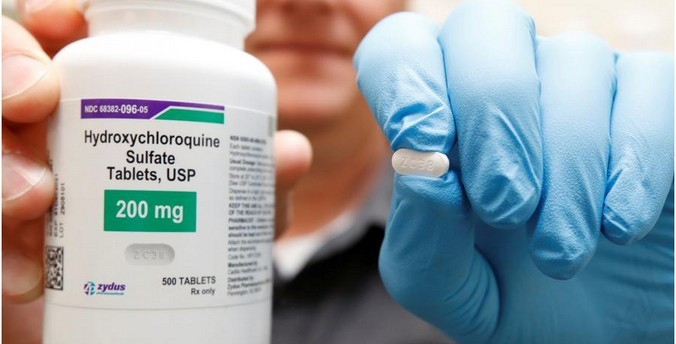

Гидроксихлорохин исключен из списка одобренных препаратов для лечения коронавируса в США.В России препарат используют

Управление по контролю за продуктами и лекарствами США (Food and Drug Administration, FDA) в понедельник исключило противомалярийный препарат гидроксихлорохин из списка препаратов, использование которых одобрено при лечении заболевших COVID-19.В письме, опубликованном на сайте FDA, говорится, что после изучения результатов клинических исследований гидроксихлорохина эксперты пришли к выводу, что препарат, вероятнее всего, не обладает каким-либо противовирусным эффектом.
В России гидроксихлорохин использовать разрешено: он числится под номером два в приложении 7 «Список возможных к назначению лекарственных средств для лечения COVID-19 у взрослых» последней, седьмой, версии Временных методических рекомендаций «Профилактика, диагностика и лечение новой коронавирусной инфекции (COVID-19)».
На официальном сайте Минздрава сообщается: «Для лечения пациентов с COVID-19 используется несколько лекарственных препаратов, способность которых воздействовать на различные звенья инфекционного процесса показана в ходе экспериментальных или ограниченных клинических исследований.К числу этих препаратов относится Гидроксихлорохин (далее-ГХХ), который благодаря противовоспалительному действию и влиянию на иммунную систему десятки лет используется для лечения малярии, ревматоидного артрита, системной красной волчанки.Рекомендации по применению ГХХ при COVID-19 основаны на результатах многочисленных зарубежных исследований, подтвердивших эффективность препарата в отношении инфекционного агента in vitro (в эксперименте), а затем в ходе клинических испытаний, а также мнениях экспертов», — говорится в документе.
Фото: REUTERS/George Frey
Posted On: 2020-06-15T21:00:00
Content Date: 2020-06-15
Download Date: 2021-06-20
Document ID: L0C04CWEX